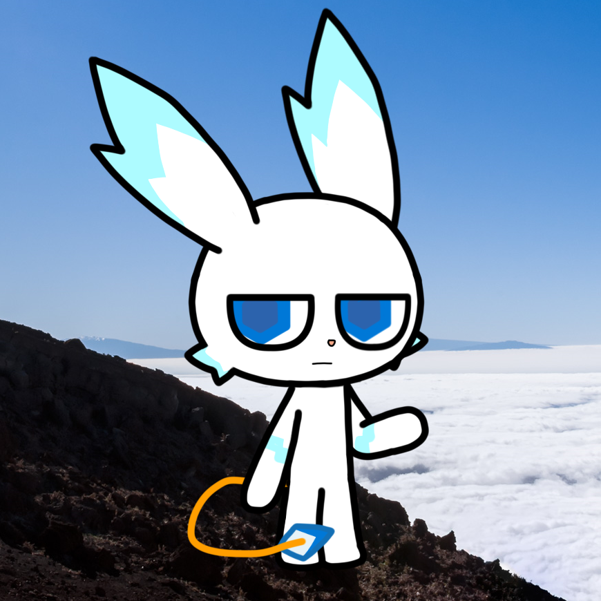

关于我
用户名：Uranus2015
年龄：--
性别：--
家乡：地月系
现居住地：太阳系
职业：暂无数据
喜欢：Coding only
嘿，你好，我不知道你是谁，但我祝你有美好的一天！
很抱歉在这里写这些，但是我真的不知道向谁倾诉，我总能看见很多年龄比我小的很厉害的人……每次我看见他们我会感到非常自卑 ；
我因为学业压力已经有近一年没有继续我的C++课程了（纯自学的）但在此之前，我总共只学了3个月 ；
……
希望我能坚持下去吧……无论是爱好，学业，还是生命……
也许我会在周末时更新一些……
关于自己……
嘿嘿，我是一个C++初学者，知道几个基本的HTML标签以及基本的几个C++语句；
我自认为我的能力不行因为我尝试过很多办法都不能提高我的数学和物理成绩；尽管我在每次学校不公布成绩的时候都会有显著进步……
呃呃……题外话……
请不要用“先生”、“小姐”、“小妮”、“小子”一类的称呼来称呼我；我也不知道我为什么会感觉尴尬……但无论如何，还是叫我“人类”为好；
Other
我的第一个GitHub账号是在疫情期间注册的，我当时误打误撞地注册了个GitHub账号，后面再也没有管过它，于是后来它随着我的旧邮箱一起被我删掉了；
如果我当时没删邮箱的话我还能装一把……不对，就我这shit一样的技术我能装什么呀我qwq
博客的背景是Windows 10自带壁纸，路径是
C:\Windows\Web\Wallpaper\Theme1\img 1.jpg
顺带一提，它和
C:\Windows\Web\Screen\img 100.jpg
拍摄于同一地点（华拉里基海滩，新西兰）；不过它看起来是个海蚀拱桥，可能过几十年就看不见了😢
个人形象
我的个人形象（在这里的pfp）是一只白色的蓝色的长着长耳朵的老鼠;它的名字叫做Skyice;但是事实上这个角色它是个PC的拟人（等下，这是人吗）形象而不是真的老鼠；该图片背景是Windows 10自带壁纸，路径是C:\Windows\Web\Screen\img 104.jpg，如果你使用的是Windows 10，你可以找到它；

我喜欢的角色
我最喜欢的角色是窓辺とおこ，也就是Windows 10的拟人形象
从左到右依次是 窓辺あい（Windows 8）、窓辺ゆう（Windows 8）、窓辺とおこ（Windows 10）、窓辺ななみ（Windows 7）、クラウディア窓辺（Azure）
网站创建于2026年，为什么会有2020的文章？
我早就想创建一个个人网站了，那些文章是我一直想发布但没办法发布的……算是补发（迫真）